Mesh-Client
Cross-platform Electron desktop client for Meshtastic, MeshCore, and Reticulum (LXMF) on macOS, Linux, and Windows — BLE, USB serial, Wi-Fi/TCP, MQTT, local SQLite history, routing diagnostics, 16-language UI, plus a Ratspeak-compatible Reticulum sidecar (Games, encrypted paper, LXST voice, Nomad, RRC, Remote).


For everyone, everywhere. We welcome community participation and collaboration in the development of this project!
Releases and build artifacts are published on GitHub; source is also manually mirrored to gitworkshop.
Why
Mesh-Client: The Universal Desktop Suite for Mesh Networks
Reliable Desktop Power. Local Persistence. Total Insight.
While official mobile apps cover the basics, desktop power users often face a fragmented ecosystem: limited desktop options for MeshCore and Reticulum (LXMF), inconsistent support across operating systems, and persistent sync issues on macOS. Mesh-Client fills those gaps with a high-performance desktop experience that unifies Meshtastic, MeshCore, and Reticulum in one app.
With a dedicated local SQLite database, Mesh-Client keeps message history and mesh logs durable across restarts and sync failures. It provides one reliable hub for Meshtastic, MeshCore, and Reticulum (via an AGPL Rust sidecar), delivering a unified workflow regardless of protocol or hardware.
Why Mesh-Client?
- True message persistence: Local SQLite storage for reliable long-term history, without lost chats or broken logs.
- Universal protocol support: One consistent interface for Meshtastic, MeshCore, and Reticulum (amber protocol pill; LXMF DMs, RRC hub chat, Nomad, Remote, Games, and LXST voice via sidecar).
- Advanced mesh visibility: Routing diagnostics and mesh health insight that mobile apps often skip.
- Desktop-first workflow: MQTT integration (Meshtastic/MeshCore); for Reticulum, LXMF DMs / encrypted paper / propagation, RRC, LRGP Games, LXST voice, and rnsh/rncp Remote — aimed at Ratspeak-compatible peers.
- Cross-platform stability: A feature-rich experience across macOS, Linux, and Windows.
From real-time diagnostics to permanent message archives, Mesh-Client delivers the desktop visibility serious mesh users require.
Known Bugs:
- Linux BLE: uses Web Bluetooth (Chromium's built-in BLE API), with a user-visible picker and user gesture requirement to select a device. MeshCore may prompt for the radio's PIN and run OS-level pairing (
bluetoothctl) before the connection completes when BlueZ reports the device as not paired (see docs/development-environment.md).
Visuals
Screenshots
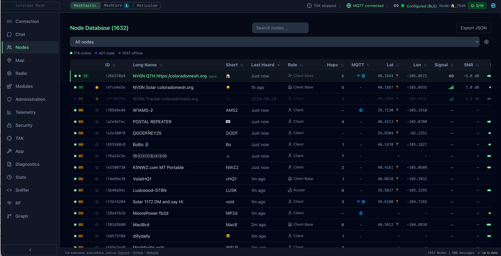 |
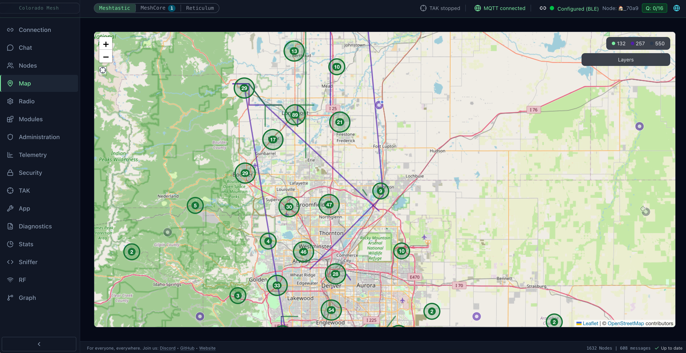 |
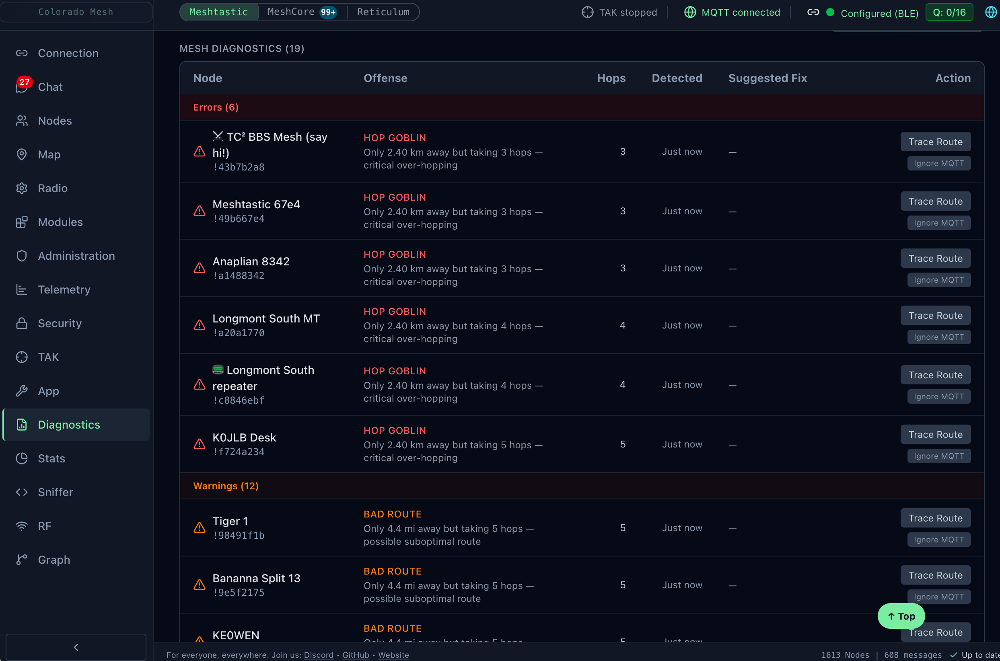 |
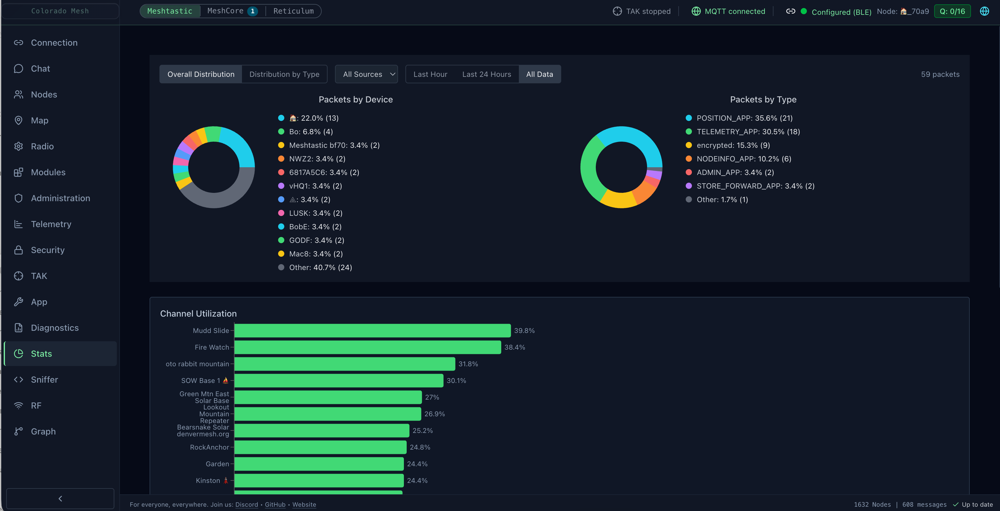 |
|
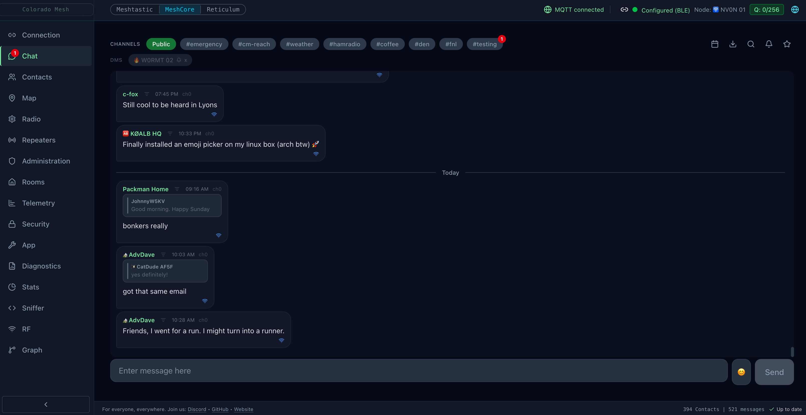 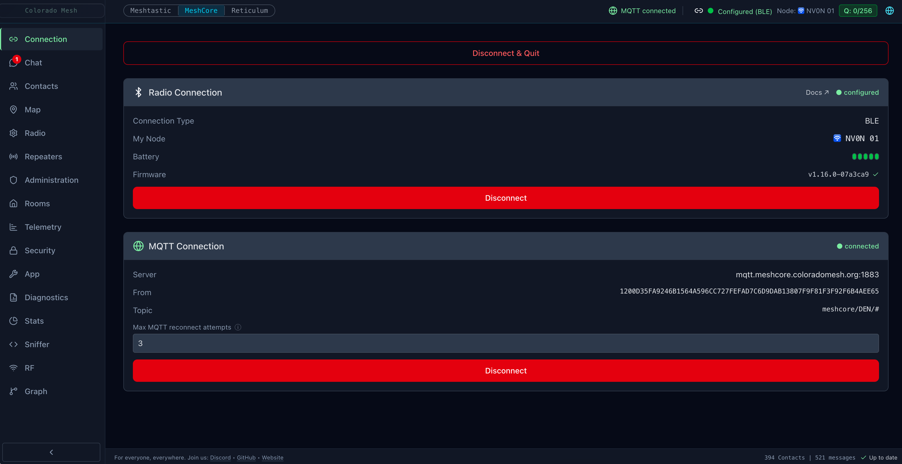 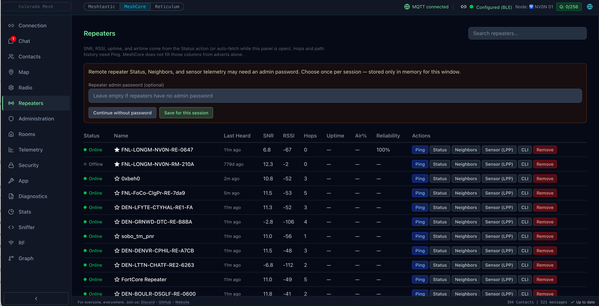 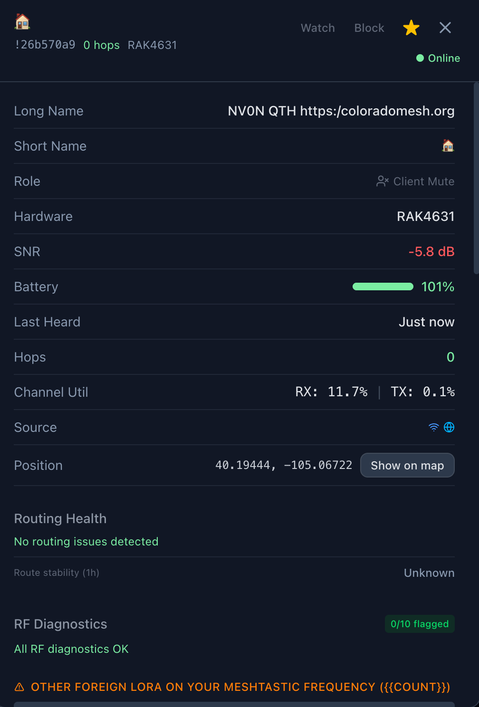 |
|||
|
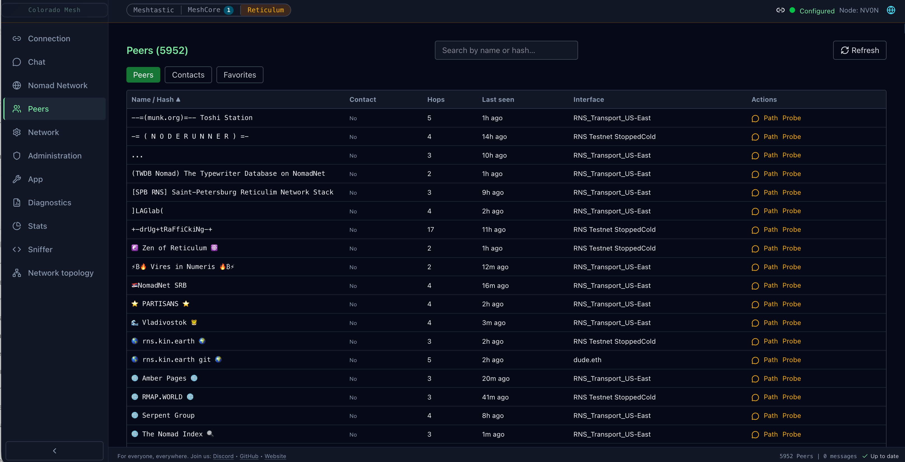 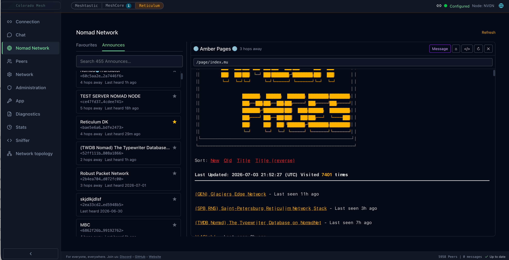 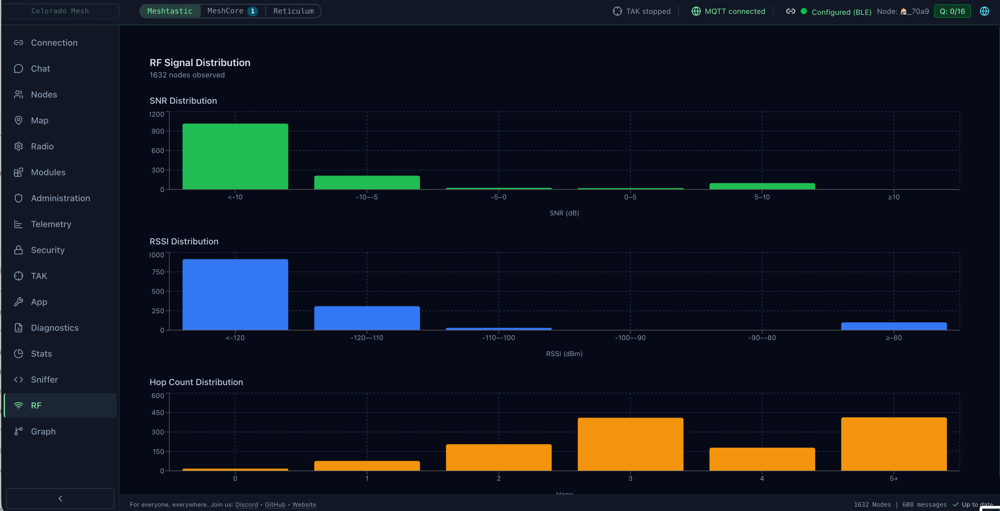 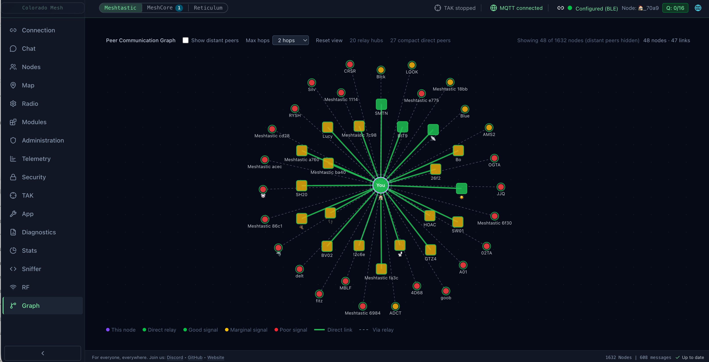 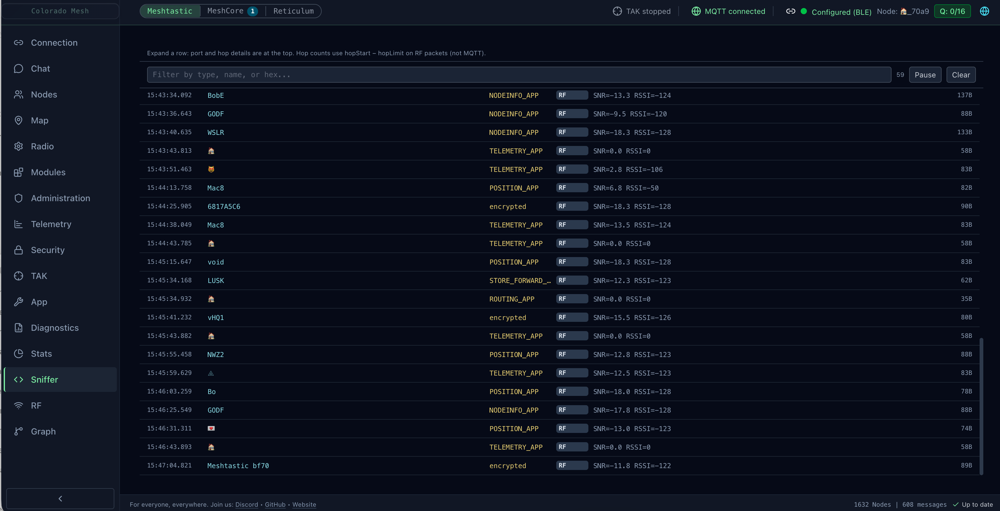 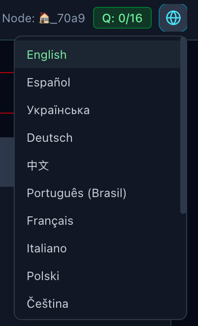 |
|||
Key Features
Mesh-Client supports three mesh stacks in one desktop app. Use the header protocol switcher (Meshtastic green, MeshCore cyan, Reticulum amber) to focus a tab; the other sessions stay connected in the background.
| Protocol | Transport focus | Deep-dive doc |
|---|---|---|
| Meshtastic | BLE, USB serial, HTTP, TCP (4403), MQTT (protobuf) | Sections below + diagnostics |
| MeshCore | BLE, USB serial, TCP, MQTT (JSON v1) | Below + parity doc |
| Reticulum | Sidecar stack: TCP, I2P, Auto, RNode USB/BLE/Wi‑Fi | reticulum.md · Games · IPC |
Meshtastic Features
Radio & Channel Configuration
- Edit channels: name, PSK, and role; 18 region presets and 7 modem presets
- Channel URL import/export (Radio tab): generate, copy, preview, and apply
https://meshtastic.org/e/#…ormeshtastic://links (same ChannelSet protobuf format as the Android/web clients); replace all channels or add-only mode - Device roles: Client, Router, Tracker, Sensor, TAK, and more
- Display, Bluetooth, and Power settings on the Radio tab (screen/LED, pairing, sleep, and power limits)
- Per-channel MQTT gateway uplink (RF → MQTT)
- Administration tab: reboot, shutdown, factory reset, NodeDB reset (optional preserve favorites), reboot-to-OTA, and enter DFU (local radio only; OTA/DFU disabled when Configure node targets a remote node)
MQTT
- Subscribe to a broker to receive mesh traffic over the internet; AES-128/256-CTR decryption (16- or 32-byte channel PSKs), automatic RF deduplication, cross-transport chat dedup (when the same message arrives on MQTT and RF within ~10 minutes, one bubble is kept and the transport badge upgrades to both), exponential MQTT reconnect backoff (60s base, capped at 45 minutes; faster retry on connack timeout), and an active node cache that periodically refreshes presence information so MQTT-only and RF+MQTT nodes stay visible even when your radio is offline
- Channel PSKs on the Connection tab: base64 keys per line (
ChannelName=base64orChannelName@index=base64when your local slot differs from the MQTT topic name); multiple keys per channel name are supported; LongFast default is always tried; keys from the Radio tab sync automatically when the radio is connected (custom named keys are not overwritten by the default public PSK on sync). Inbound MQTT text is attributed using the topic channel name (receiver-local slot), not the sender'sMeshPacket.channel - MQTT-only chat identity: when sending without a connected radio, outbound
fromuses your last known RF node id when available, otherwise a stable per-install virtual id (persisted in app settings) - Enable TLS (mqtts / wss) toggle for private brokers (not only port 8883/443); optional Allow insecure TLS for self-signed or non–public CA chains
- Per-channel MQTT uplink (RF → MQTT) uses each channel’s real name and PSK when publishing
- Transport indicator (RF / MQTT / both) on received messages; MQTT messages are shown in chat but not rebroadcast over RF
- Enter your broker URL, topic, and optional credentials in the MQTT section of the Connection tab; settings persist across sessions
Module Configuration
- Telemetry module (device, environment, air quality intervals), MQTT relay, Serial, External Notification, Store & Forward, Range Test, Canned Messages, Neighbor Info, Ambient Lighting, Detection Sensor, Pax Counter, Remote Hardware, Traffic Management, TAK (when firmware exposes the module key), and RTTTL (ringtone); editable from the Modules tab in firmware-dependent order (not strictly alphabetical)
- ConfigApplyNotice at the top of Radio, Modules, and Security reminds you that changes persist to the device and may require reboot; Apply stays disabled until each config slice hydrates from the device so defaults cannot overwrite live settings
- Remote Hardware (GPIO): configure pins and apply module settings; live GPIO status stream when the module is enabled
- Module status displays: Range Test, Serial, Store & Forward, Remote Hardware (GPIO), and IP Tunnel (status-only) show packet counts and last-received timestamps when the corresponding module is enabled on the device
- Store & Forward chat history: after RF configure, the client may request
CLIENT_HISTORYon the first primary router heartbeat (capped messages/window, 15 min cooldown, 5 min offline gate; opt-out in App settings). Use Catch up from Store & Forward in Chat for manual fetch. Replayed text shows a Store & Forward badge; MQTT reconnect floods within ~30 s are treated as history and deduped
Security
- Meshtastic — Security (PKI) tab (between Telemetry and TAK): admin / PKI key management; backup, restore, regenerate, and apply keys and related toggles from the device.
- MeshCore — Security tab (partial): per-node key backup / restore (full public + private pair), sign data, export/import private key. Meshtastic PKI admin sections are hidden (
hasSecurityPanelis true for both protocols; capabilities differ). - DM / device key backup / restore: Backup Keys encrypts the connected local radio’s public and private keys into a per-node slot (
localStorage, OS keychain viasafeStorage). Meshtastic indexes bynodeNum; MeshCore bynodeId. Backing up a second radio does not overwrite the first. Restore Keys applies the archive for the connected node; Restore from backup… picks any archived entry (factory reset / node id change). Hidden for remote configure targets. See Key backup and cryptography (includes backing up before moving Meshtastic nodes to MeshCore). - PKC remote node administration (Meshtastic, firmware 2.5+): Configure node selector on Radio, Modules, Security, and Administration tabs to edit another node’s settings through your connected local radio; Configure node remotely from node detail when a per-node admin key is saved; Copy public key in Security for one-time trust setup. Paste a remote node’s admin public key in node detail (base64,
base64:…, or 64-char hex). PKI uses the mesh NodeDB key when present, with stored admin-key fallback. Requires a connected local Meshtastic radio — MQTT-only sessions cannot administer remote nodes.
Network Diagnostics
- Protocol-scoped rows: The shared Diagnostics tab filters findings to the active protocol — Meshtastic/MeshCore show LoRa routing + RF rows only (including MeshCore High Companion TX Queue); Reticulum shows
reticulum/*interface/path/LXMF rows only (sidecar health, propagation sync stuck/failing, interface-down alerts no longer bleed onto LoRa tabs). Map halos, node-list badges, and node detail routing sections use the same filter. - Network health: status band Healthy / Attention / Degraded plus error and warning counts. Degraded applies only when routing error count ≥ 3; fewer errors use Attention so small issues don't paint the whole panel red
- Single table from
diagnosticRows(routing trace rows + RF rows), searchable; rows persist across sessions with an optional restore banner; max age (1–168 hours) trims stale routing (24 h default) and RF (1 h default) rows - Foreign LoRa overhear (Meshtastic tab): MeshCore-heard, Reticulum RNS, other-Meshtastic, and unknown LoRa classes from decode-fail logs and dual-radio RX; 90-minute window; MeshCore repeater conflict escalation above 5 pkt/min
- Mesh congestion attribution: orange banner when mesh-wide routing stress is present; duplicate-traffic block in node detail when relevant
- Routing anomaly detection: hop_goblin (distance-proven over-hopping; Meshtastic-only), bad_route (high duplication; close-in distance variant Meshtastic-only), route_flapping / path_instability (MeshCore PathUpdated events), impossible_hop, weak_link (MeshCore per-hop SNR from trace); with remediation suggestions and severity levels
- Channel Utilization History: 24h CU timeline chart for the connected node in DiagnosticsPanel (fed by LocalStats / device-metrics ingest, not only NodeInfo)
- Anomaly badges inline in node list; status aura circles on the map; congestion halos toggle; global and per-node MQTT ignore
- Environment Profile segmented control; Standard (3 km), City (1.6× threshold), Canyon (2.6× threshold)
See Diagnostics Reference for a full reference on what triggers each finding and how to interpret it.
Environment Telemetry
- Push-based environment charts (temperature, humidity, pressure, air quality) from Meshtastic telemetry packets, displayed in the Telemetry tab
Packet Redundancy
- Per-node redundancy score derived from the last 20 observed packets;
+Necho count in the node list; collapsible Path History in node detail
TAK Server (CoT Gateway) (Meshtastic only)
- TAK tab (between Security and App): broadcast mesh node positions as Cursor on Target (CoT) XML events over TLS TCP (port 8089)
- Enables ATAK, WinTAK, and iTAK clients to see mesh nodes on their tactical maps
- Certificate management: self-signed CA + server + client certificates via node-forge; regenerate anytime from the TAK tab
- Data package generator: export ATAK-compatible (ca.pem, client.p12, connection.pref) for direct import on TAK devices
- Auto-start option (off by default); status indicator in header when running
- ATAK Plugin Messages: incoming ATAK plugin packets from mesh nodes are displayed in the TAK tab with sender node and packet counts
Desktop shell (all protocols)
- Tri-protocol switcher: Meshtastic, MeshCore, and Reticulum run simultaneously; per-protocol unread badges (green / cyan / amber — Reticulum amber = LXMF Chat + RRC unread, not Games; Games has its own sidebar badge); passive toast notifications when an inactive protocol receives traffic
- Localization: 16 languages via static JSON bundles; fully offline — see Localization & Languages
- Accessibility: modal focus trap, screen reader labels, reduce-motion and Use 24-hour time toggles in App → Appearance — see Accessibility Checklist
- Colors (App → Appearance): customize theme tokens including chat/RRC message action bar and button hover colors; optional Show background on the action bar and Always show message actions
- Log panel: live stream, Analyze heuristics, export/delete; Reticulum sidecar lines tagged
[ReticulumSidecar] - SQLite persistence: protocol-scoped history and settings; DB export/import/clear in the App tab; Export for GitHub (zip: debug snapshot + logs) and Export for Developer (includes full SQLite — share privately only)
- Updates & tray: footer update status; system tray unread badge when the window is backgrounded
Shared RF features (Meshtastic & MeshCore)
These sections apply to the two LoRa companion-radio stacks. Reticulum uses the sidecar model documented under Reticulum Features below.
Connectivity
- Bluetooth LE: pair wirelessly; on macOS/Windows, startup auto-reconnect can run without a user gesture (Noble backend). On Linux, Web Bluetooth requires user gesture and picker selection. Reticulum BLE (RNode / BLE Peer interfaces) uses the sidecar
btleplugstack and may coexist on a different MAC while Meshtastic/MeshCore use Noble/Web Bluetooth — see Reticulum BLE coexistence. - USB Serial: plug in via USB; auto-reconnects silently on startup (saved port signature matches the same physical device across re-enumeration)
- WiFi / HTTP / TCP: Meshtastic offers WiFi/HTTP (REST, one packet per request) and WiFi/TCP (fast) (native binary streaming on port 4403, same framing as USB serial — much faster NodeDB sync on large networks); MeshCore uses TCP on port 5000 by default; remembered addresses auto-connect on launch (same coordinator as serial/BLE) and support quick reconnect after drops
- Dual LoRa mode: Meshtastic and MeshCore stay connected while you switch views; per-protocol unread badges; passive toasts on background traffic
- Connection status in header: device, MQTT, and TAK indicators pulse red after an unexpected disconnect; manual stop/disconnect stays gray; in-progress connect keeps yellow
Chat
- Send/receive messages across channels with per-transport delivery badges and delivery ACK / failure states
- Durable outbox: outgoing messages are queued in SQLite and retried until delivered; survive app restarts and connection drops
- Long message chunking (Meshtastic / Reticulum): messages over the payload limit are auto-split into sequential
[N/T]-prefixed chunks (word-boundary split, max 9 chunks). MeshCore is single-packet: each message is sent as one radio packet and longer text is blocked with an explanatory notice (busy repeaters drop split parts — see Limitations). MeshCore MQTT-only connections are also guarded from sending when no RF path is available - Shared composer (
ChatComposer): drafts, mentions, protocol-aware length limits (chunking for Meshtastic / Reticulum; single-packet for MeshCore, see above), spellcheck, and emoji picker used by Chat and MeshCore Rooms; right‑click misspelling replacements (Electron spellchecker for both protocols) - Emoji reactions / tapbacks: Meshtastic — 12 quick-pick reactions plus compose emoji (native panel on macOS/Windows;
emoji-picker-elementon Linux); wire tapbacks decode payload UTF-8 glyphs (flags, ZWJ sequences, and legacy index 1–12). MeshCore — same picker UX; default outbound tapbacks and text replies use keyless companion wire@[Display Name] …(inbound keyed@[Name#key], Openr:HASH:INDEX, andg:GIFIDalso parsed). Optional MeshCore Open compatibility in App settings enables keyed replies,r:reactions, and Giphy GIF send — see docs/meshcore-meshtastic-parity.md; reply-to-message with quoted preview in bubble (including room BBS posts) - System tray: docked/minimized on macOS and Windows shows an unread indicator when chat or MeshCore Rooms traffic arrives while the window is in the background
@[Display Name]tokens (Meshtastic / MeshCore reply, tapback, path, and inline-reference syntax) render as compact inline labels in the bubble instead of raw brackets; see docs/meshcore-meshtastic-parity.md- Unread message divider that persists across restarts; auto-scrolls on tab switch
- Direct messages (DMs) to individual nodes; DM info header shows battery, last heard, and SNR for the peer
- Draft persistence: unsent message is saved per channel/DM and restored when you return
- Copy message: hover action copies message text to the clipboard
- Sender filter: click any message sender to filter the view to that sender; Escape clears
- Jump to date: scroll the chat to a specific calendar date
- Link previews:
http/httpsURLs fetch metadata via main-process IPC — Open Graph for pages, YouTube oEmbed for watch/shorts/youtu.be links, and inline image embeds for direct raster URLs (.jpg,.png, etc.). Localhost and private IPs are blocked. - Sound notifications: audio ping for new messages in non-active channels/DMs; global mute in the toolbar; per-conversation mute (bell on channel/DM tabs) stored per protocol
- Message starring: star messages from the hover row; Starred view lists bookmarks across conversations (newest first, cap 200)
- Timestamp tooltip: hover the short time label for full date and time
- @mention autocomplete: type
@to open a node-name picker; Tab or Enter to insert; arrow keys to navigate - Export chat: save the current channel or DM history as a
.txtfile via Save dialog
Node Management
- Node list with SNR, battery, GPS, last heard (any live RF packet—position, telemetry, traceroute, text—not only chat); signal bars appear only for direct (0-hop) RF neighbors; multi-hop and MQTT-only paths omit bars; SNR in traces and neighbor views uses color-coded quality (good / marginal / poor)
- Cross-Protocol Signal Analyzer: foreign LoRa traffic detection (MeshCore, Reticulum RNS, other Meshtastic, unknown) on the Meshtastic and MeshCore Diagnostics tabs and in node detail when RF rows are present; not shown on the Reticulum Diagnostics tab
- Distance filter, favorite/pin nodes, device role icons
- Node Detail Modal: DM, trace route with per-hop display, delete node, neighbor info, Map Report (Meshtastic), PaxCounter, Detection Sensor, channel utilization (Meshtastic), export/share contact (MeshCore), node notes (free-text, SQLite-persisted), watch / notify (OS desktop notification on online/offline transition)
- Node Health Score: composite 0–100 badge on each node row (signal 40 pts, recency 30 pts, load 20 pts, battery 10 pts); color-coded green / yellow / red with tooltip breakdown
- JSON export: export the full node list as JSON from NodeListPanel
Map & Position
- Interactive map with node positions and your current location (device GPS → browser geolocation → IP-based city-level fallback); default OpenStreetMap basemap with optional Carto Dark
- Layers control (Map tab, top right): switch basemap, toggle overlays (markers, movement trails, waypoints, diagnostic halos); basemap preference persists in SQLite and localStorage
- Show on map from the node list pin or node detail; switches to the Map tab and flies to that node
- Position trail: persisted path overlay (configurable 1 h – 7 days); survives restarts via SQLite; toggle and window size in App tab; wipe via Danger Zone
- Auto-refresh at configurable intervals; manual static position entry; send your position back to your device
- Reticulum Map tab uses RMAP v4 discovery (opt-in heard interfaces), not Meshtastic/MeshCore node positions — see Reticulum Features
Telemetry
- Battery voltage and signal quality charts (SNR/RSSI) in the Telemetry tab
MeshCore Features
MeshCore runs simultaneously alongside Meshtastic and Reticulum. Use the protocol switcher in the header to bring MeshCore into view; the other sessions stay connected in the background. Meshtastic shows 16 sidebar tabs (including Administration, Security, TAK, Stats, and Sniffer; no Rooms tab). MeshCore shows 16 tabs (TAK is hidden; Contacts replaces Nodes, Repeaters replaces Modules, and Rooms is MeshCore-only; Security shows backup/restore and crypto tools only). Reticulum shows 15 tabs (Connection, Chat, Games, RRC, Nomad Network, Remote, Peers, Map, Network, Admin, App, Diagnostics, Stats, Sniffer, Topology). Stats and Sniffer are available in all three protocols; RF and Graph are LoRa-only (Meshtastic and MeshCore).
- Transmit queue: header badge (with tooltip) when the connected radio reports outbound queue depth (STATS).
Contacts & Discovery
- Contact list with advert-based positions, contact types (Chat, Repeater, Room), and GPS coordinates persisted to SQLite; contacts seed from DB on reconnect as a fallback cache
- Favorite / pin: persisted per contact in SQLite (
meshcore_contacts.favorited) - Contact groups: protocol-neutral; create and manage groups from the Contacts tab toolbar (Meshtastic: Nodes tab); Meshtastic has built-in groups (GPS, RF+MQTT); filter the list by group; Room contacts excluded from user groups by default
- Import Contacts: Nodes tab: bulk JSON nickname import to pre-fill contact names (not on the Repeaters panel)
- Refresh Contacts: pull the full contact list from the device on demand
- Show Public Keys: toggle to display full public keys under contact names
- Contact Auto-Add: configure auto-add mode (on/off), overwrite existing, max hops; apply settings to device
- Clear All Contacts: destructive action with confirmation (Radio tab Danger Zone)
- Send Advert: broadcast your node's presence (flood advert) to the mesh with loading state and toast feedback
- Manual Contact Approval: toggle between auto-add (contacts appear automatically when heard) and manual-add (new contacts require approval before appearing); preference is persisted and re-applied on reconnect
Messaging
- Channel messaging and direct messages (DMs) with delivery ACK tracking (
expectedAckCrc) and failure timeout; DM threads can be closed from the chat UI - Transport badges on received messages; RF, MQTT, or both (persisted as
received_viainmeshcore_messages); MQTT JSON chat can be used when RF is down - Inbound dedup (
meshcoreStoreDedup.ts): merges duplicate RF/MQTT echoes, companion TX echoes, and tapback self-echoes so chat and Rooms stay readable - MeshCore Open GIFs: inbound
g:GIFID(and Giphy URLs) render inline in chat; outbound send via App MeshCore Open compatibility toggle (paste URL/ID or GIF composer button) — see parity doc - Incoming push events: periodic advert (0x80), path update (0x81), send confirmed (0x82), message waiting (0x83), new contact (0x8A), incoming DM (7), incoming channel message (8)
- All messages and contacts persisted to SQLite (
meshcore_messages,meshcore_contactstables)
Room servers (BBS) — Rooms tab (RF only; not MQTT)
- Login to room-server contacts (guest read-only or admin post); Continue read-only when the server guest password is empty (zero-byte password, matching the official Android client)
- Post plain UTF-8 after login; inbound SignedPlain pushes show author prefix stripped in the UI
- Remember password, Auto-sync (periodic re-login while connected, minimum 60 minutes per room), per-room unread badges (sidebar Rooms tab; separate from Chat badges)
- Room admin CLI in the Rooms panel; session/login queue and path sync in
meshcoreRoom*.ts— see docs/meshcore-meshtastic-parity.md and Troubleshooting
Diagnostics & Remote Queries
- Trace route (
tracePath): per-hop SNR display; each intermediate hop's SNR is reported individually, unlike Meshtastic's hop-count-only trace - Repeater Status: on-demand query of noise floor, last RSSI/SNR, packet counts, air time, uptime, TX queue, error events, and duplicate counts; available for any contact
- Remote Telemetry: pull CayenneLPP-encoded environment data (temperature, humidity, barometric pressure, voltage, GPS) from any contact via
getTelemetry; results shown inline in the node detail modal with fetch timestamp - Neighbor Info: query a Repeater node's neighbor list via paged binary
GetNeighbours(request page size 50; firmware may return fewer rows); shows each neighbor's name (resolved from contacts or hex prefix), how recently it was heard, and color-coded SNR; Load more continues from the listed count when the total is higher
Repeaters
- Repeaters panel (MeshCore-only tab): list repeaters with on-demand status (noise floor, RSSI/SNR, packet counts, air time, uptime, TX queue); Path column shows a per-hop SNR sparkline from the last trace (last trace/path hop data is also stored in local SQLite so sparklines can survive app restarts); per-row Neighbors expands an inline neighbor list (same query as node detail, including Load more)
- Per-repeater admin passwords: optional Remember saves credentials per repeater in SQLite
app_settings(meshcoreRepeaterCredential:<nodeId>); collapsible Saved repeater passwords sidebar section with per-repeater Forget - Waiting-message drain: header status indicator (queued backlog and active sync on any protocol tab; paused/deferred state only on the MeshCore tab) during serial companion backlog drain; Sync now for manual catch-up
- Repeater CLI: per-repeater expandable CLI interface; command input with Enter to send, scrollable command/response history, Up/Down arrow history navigation, quick-command bar (get name, get radio, neighbors, version, clock, clock sync, clear stats, advert, board, …), flood vs. auto (saved path) routing toggle; responses are correlated to commands via 2-character hex prefix tokens; configurable retries with dynamic timeout; auto Ping before the first multi-hop CLI command when no trace exists this session (info toast while establishing route); destructive-command confirm modal for reboot/erase/factory-reset patterns
- Remote session authentication (optional): Password may be required for CLI and some telemetry paths when firmware ACL demands it. Status and Neighbors use pubkey-framed companion commands and typically work without login on direct (0-hop) repeaters; the auth modal offers “Continue without password.” Saved passwords persist when Remember is checked. Admin RPCs share a serialized companion queue — expect up to ~2 minutes blocked while a ping or multi-hop request runs. Status/Telemetry/Neighbors toast when the radio is disconnected.
- Panel toolbar: Reboot Device (shown when the device supports the command); Send Advert and Sync Clock moved to Radio panel Device Actions section (distinct from the Repeater CLI
clock syncquick pill) - Per-repeater removal: two-click confirm button on each row; removes from in-memory state and deletes from the SQLite contacts DB
- Clear All Repeaters: Danger Zone entry in the App tab that deletes all Repeater-type contacts (contact_type = 2) from the DB while leaving Chat and Room contacts intact
Radio Parameters
- Frequency (Hz), bandwidth, spreading factor, coding rate, and TX power; synced from device
selfInfoand applied live via the Radio tab - Channel display and edit: view and edit channel list from the device in the Radio tab; Import Config JSON (MeshCore) applies name and radio settings to the device and reports what was applied vs. not supported
Battery & Signal Telemetry
- Battery voltage from device
selfInfo; per-packet signal telemetry (SNR/RSSI) from RF event 0x88; visible in the Telemetry tab - Environment charts (temperature, humidity, barometric pressure, etc.) in the Telemetry tab when pulled Cayenne LPP data is available; same panel as Meshtastic environment telemetry
- Raw Packet Log (Sniffer tab): virtualized log (ring-buffer capped at 2,500 entries per protocol) with sortable columns, relative timestamps, quick-filter chips, and expandable hex. MeshCore: on-air path hash chains, hop count, route-type color bars, device-type icons, ping/trace from row actions; Meshtastic: transport badges (RF/MQTT), collapsed hop count; Reticulum: sidecar wire packets via WebSocket/
GET /api/v1/packets(see docs/reticulum.md); filter by type, name, or hex; Clear resets the buffer
Device Control
- Administration tab: Reboot when connected (Meshtastic also gets shutdown, factory reset, NodeDB reset, reboot-to-OTA, and enter DFU on the same tab)
- Not available for MeshCore (not implemented in the meshcore.js library): shutdown, factory reset, reset NodeDB, reboot-to-OTA, enter DFU mode
Transport Notes
- BLE: waits for GATT init (
connectedevent) before issuing commands; includes nudge timeout for stuckdeviceQueryon some devices. On Windows, pair the MeshCore device in Settings → Bluetooth & devices before connecting in the app; WinRT may need a bonded device for a stable Nordic UART session. On Linux, the app checks BlueZ pairing and may prompt for the PIN before Web Bluetooth completes when the radio is not bonded. A second connect attempt may run automatically after some transient GATT discovery or handshake timeouts (retry reuses the granted device without a new picker gesture). - Serial: auto-reconnects on startup using a saved port signature so reconnect targets the same physical device when possible
- TCP: connects to MeshCore companion radio; default port 5000, configurable per connection
- MQTT (JSON v1): The Connection tab MQTT card includes a Network Preset picker (order: LetsMesh, MeshMapper, Colorado Mesh, Waev, Meshat.se, MeshCore.CA, EastMesh, Ripple Networks, Custom). New installs default to LetsMesh (WebSocket on port 443, topic prefix
meshcore/test; broker auth uses@michaelhart/meshcore-decoder'screateAuthToken; MQTT usernamev1_<64-hex public key>, password token with JWTaudmatching the MQTT server hostname; optional Packet logger forwards RX packet summaries to the broker when enabled; see docs/letsmesh-mqtt-auth.md). LetsMesh, MeshMapper, Waev, Meshat.se, MeshCore.CA, and EastMesh share that device-signing JWT flow (WebSocket path/wsfor LetsMesh/MeshMapper,/mqttfor Waev/Meshat.se/MeshCore.CA/EastMesh; MeshCore.CA adds a Primary/Backup broker toggle). Colorado Mesh is regional (Colorado residents only; WebSocket on port 443, topic prefixmeshcore/DEN; confirm dialog on select; existing Colorado users get a one-time stay-or-switch prompt). IATA-scoped brokers require topicmeshcore/{IATA}ormeshcore/test. Ripple Networks (TLS on port 8883, topic prefixmeshcore, shared credentials, insecure TLS confirm) and Custom remain available for other brokers.
Reticulum Features
Reticulum is the third protocol tab (amber pill). The stack runs in an AGPL Rust sidecar (mesh-client-reticulum) spawned by Electron main; the MIT renderer talks to it through electronAPI.reticulum (HTTP/WS proxy). Chat history and LXMF contacts persist in SQLite.
Ratspeak-compatible stack. Primary interop target is Ratspeak peers on rsReticulum / rsLXMF, with sibling crates for the same surfaces Ratspeak ships:
| Surface | Sibling / library | mesh-client UI |
|---|---|---|
| LXMF DMs, paper, propagation | rsLXMF | Chat, Network |
| Nomad pages | rsNomad | Nomad Network |
| Live voice | rsLXST | Call on Peers / Chat DM |
| Games (TTT / Chess) | lrgp-rs | Games tab + Challenge |
| Relay chat / Remote | rsReticulum + sidecar | RRC, Remote (rnsh/rncp) |
Architecture and API: docs/reticulum.md. Games wire parity: docs/reticulum-games-parity.md.
Stack & interfaces (Connection tab)
- Start stack / Stop stack, Auto-start, Disconnect & quit
- Interfaces CRUD: TCP client, I2P, Auto (discovery), RNode over USB serial, Bluetooth (
ble://…), or Wi‑Fi (tcp://host:7633); Add default backbones regional hub picker - Config audit/repair for ghost TCP rows, unreachable hubs, and RF preset mismatches (Diagnostics + inline hints)
Network & identity (Network tab)
- Generate or import LXMF identity (mnemonic); identity vault (passcode) and encrypted identity export; import/export rnsd-style config from standard system paths
- Stack settings (
enable_transport,share_instance, log level), announce interval, Clear announces, RMAP v4 discovery publish controls - Propagation nodes (Network tab): Propagation mode Off (default) / Auto / Manual, Preferred node for offline DMs, per-node sync, optional local propagation inbox / Advanced PN hosting policy
Messaging (Chat + encrypted paper + RRC)
- Chat tab: DM-only LXMF text and reactions (peer file transfer via Remote rncp; historic LXMF attachment labels still render; cached raster images under
reticulum/attachments/display inline) - Encrypted paper (Ratspeak / LXMF paper): Chat DM Share as paper encrypts offline to a QR /
lxm://URI with no network send (Completes immediately, Paper delivery badge); Scan paper (Chat or Network Scan / import) decrypts into the local inbox when the identity matches. OSlxm://paper deep links ingest without a confirm prompt; contact / MeshCore imports still confirm - LXST voice Call on DM headers and Peers rows — live telephony over rsLXST (not an LXMF voice-note clip)
- RRC tab: multi-hub relay chat (rooms, nicklists, slash commands, favourites, auto-join, reconnect; up to 8 hubs); @mentions badge Chat + the amber protocol pill
- Remote tab: rnsh interactive shell sessions and rncp file transfer (send / receive / fetch), saved addresses and inbound-policy controls; Chat DM send-file convenience (distinct from Meshtastic remote admin)
- Delivery: Direct when the destination is in the path table; after Direct exhausts, multi-PN cascade (preferred remote → other enabled remotes hop-sorted → local-prop last). Remote PN Completes show Stored at propagation node (
delivered); local-prop Completes as local inbox (stored_locally) — neither is recipient Delivered
Games (LRGP)
- Games tab (Reticulum-only): Tic-Tac-Toe and Chess over LRGP, wire-compatible with Ratspeak — challenge, accept, play, draw/resign, session list + unread badge (sidebar; not folded into the amber protocol-pill total)
- Challenge from Peers rows and Chat DM headers; deep links
lrgp:<session>andlxm://game/<id>open the Games tab to that session - See Games parity checklist for command/UI interop status vs Ratspeak
Peers, topology, Nomad Network, Map
- Peers tab: RNS path-table peers, messaged History, saved Contacts, and Favorites (sub-tabs); LXMFace avatars; virtualized large lists, path probe, LXST Call, LRGP Challenge, and peer detail modal (Save as contact is manual — messaging alone does not add Contacts)
- Map tab: local RMAP v4 discovery map (Leaflet + OSM basemaps; heard opt-in interfaces with GPS; interface-type filters; reachable vs heard-only sidebar list; publish via Network + Connection); Global map link to rmap.world — no position trails or waypoints (contrast with Meshtastic/MeshCore Map)
- Topology tab: best-effort graph from the RNS path table (next-hop edges, force layout)
- Nomad Network tab: collapsible favourites/announces list (default Favourites sub-tab); My Pages hosts a static Nomad site (rsNomad
nomad-core) — Choose folder for a watched site root (e.g. siblingnomad-pagewithpages/*.mu) or pages directory, set a display name, Start serving (off by default; auto-restores when the stack comes back up); Micron browser with fit-width default + open-width toggle; panel lazy-mounts after first visit
Deep links & QR
- Registered OS scheme
lxm://(identity / contact / paper / game); Columba-compatiblelxma://contact+key when pasting or opening; MeshCoremeshcore://ingest when pasted/opened (not OS-registered) - Network Scan / import and Chat paper controls share one ingest path (
handleReticulumQrIngest)
Admin & hardware
- RNode firmware flasher (Web Serial): nRF52 DFU, ESP32 (
esptool-js), EEPROM provision, optional Wi‑Fi station/AP provisioning - Stack factory reset (danger zone)
Diagnostics
- Reticulum-native interface, path, and LXMF health rows — not Meshtastic Hop Goblins or MeshCore repeater noise-floor findings
- LoRa routing/RF findings from other protocols are hidden on the Reticulum tab (
filterDiagnosticRowsForProtocol)
Transport notes
- No Meshtastic/MeshCore-style MQTT or Noble
ConnectionDriverpath; connect by starting the sidecar, then enabling interfaces - BLE coexistence: Meshtastic, MeshCore, and Reticulum may each use Bluetooth simultaneously on different devices; the app rejects the same MAC for two protocols and serializes scans only
- Packaged builds bundle
mesh-client-reticulumbeside the Electron app; dev builds:pnpm run reticulum:sidecar:build— see development-environment.md
Limitations
- MQTT → RF (Meshtastic): Downlink uses the firmware MQTT module (
proxy_to_client_enabledon BLE/USB) and per-channel downlink enabled on the Radio tab — not legacy appsendTextrelay. mesh-client bridgesMqttClientProxyMessagebetween broker and radio when proxy is active. - MQTT → RF (MeshCore JSON): Not supported; MeshCore MQTT is chat ingest only.
- Meshtastic - PKC remote admin: Configure-node-over-MQTT is not supported; a connected local RF radio is required to reach remote nodes (firmware 2.5+).
- MeshCore - MQTT (JSON v1): The Connection tab can connect to an MQTT broker in MeshCore mode using a small JSON chat envelope (see docs/meshcore-meshtastic-parity.md). This is separate from Meshtastic's protobuf MQTT pipeline.
- Breaking change — MeshCore single-packet messages (no multi-part / multi-split): mesh-client no longer auto-splits outbound MeshCore chat, DM, or room messages into numbered
[i/N]packets. Each send is one radio packet (max ~130-160 characters depending on context and sender name); longer text is blocked with an explanatory notice in the composer. On a busy mesh, repeaters routinely drop some split parts, so recipients previously got silently incomplete messages. Migration: shorten long messages, or send them as a few separate shorter messages. A non-blocking advisory also appears if you send faster than the mesh can relay (~5s). Call this out in release notes. Upstream: meshcore-dev/MeshCore#1502, #2820, #3053. Inbound multi-part from other clients is still merged for display. Meshtastic multi-split (up to 9 parts) is unchanged. - MeshCore - partial routing diagnostics: MeshCore supports
route_flapping/path_instability(PathUpdated events) andweak_link(whenhasPerHopSnrand a trace is completed). Distance-basedhop_goblin/ close-inbad_routeare Meshtastic-only (hasDistanceBasedHopAnomalies). Full hop-anomaly detection and Meshtastic-style LocalStats RF findings require Meshtastic packets; MeshCore provides its own RF findings (Elevated Noise Floor, Excessive Flooding) from Repeater Status packet stats. Foreign LoRa tables render on the Meshtastic tab only (MeshCore may record overhear internally). - MeshCore - channel editing: Can add/edit/delete channels (name + PSK) via the Radio tab, but does not expose Meshtastic-style full protobuf config. Radio parameters (frequency, bandwidth, spreading factor, coding rate, TX power) can be set via the Radio tab.
- MeshCore - remote telemetry availability:
getTelemetryrequires the remote node to have environment sensors. A timeout is returned if the node has no sensor data. - MeshCore - neighbor info availability:
getNeighboursis supported only by Repeater-type nodes running firmware v1.9.0+. The button is hidden for Chat and Room contacts. - MeshCore - Trace Route / Ping trace: Remote nodes typically respond only if they have your node as a contact. One-way or foreign heard nodes may lead to a client-side timeout; multi-hop paths without synced outPath bytes trigger passive PathUpdated wait + contact refresh (15s + 5s × hops, capped at 45s), then for 2+ hops up to two flood-advert priming rounds before
SendTracePath. 1-hop targets may use a synthesized[relayPrefix, destPrefix]path when a direct 0-hop repeater is known. If priming and synthesis still fail, ping may fast-fail with No route from radio yet instead of waiting the full trace timeout. See Troubleshooting; MeshCore: Trace Route or Ping trace times out. - MeshCore - contact type labels: MeshCore reports a numeric
typefield (0 = None, 1 = Chat, 2 = Repeater, 3 = Room); displayed in the hw_model field in the node list. - MeshCore - Security tab (partial): Meshtastic-style PKI admin is not on MeshCore firmware; the Security tab shows per-node key backup/restore, sign, and export/import only. LetsMesh MQTT uses a separate active identity cache (
mesh-client:meshcoreIdentity); per-node archives do not overwrite each other — see Key backup and cryptography. - Map tiles; OpenStreetMap Referer requirement: Packaged desktop builds load the UI from the local filesystem. The main process now loads the renderer with an explicit HTTP referrer so OpenStreetMap tile requests include a valid
Refererheader and comply with the tile usage policy. If you point the app at a different tile server, ensure its usage policy permits this client. - Reticulum — no LoRa companion parity: Reticulum does not use Meshtastic/MeshCore
ConnectionDriver, MQTT hybrid, channel pills, Rooms BBS, or Hop Goblins diagnostics. The Chat tab is DM-only; hub room chat lives on the RRC tab. Interface add/edit/delete updates config on disk — restart the stack after changes underrns-stack. - Reticulum — sidecar license: The spawned
mesh-client-reticulumbinary is AGPL-3.0 (separate process from the MIT Electron shell). See docs/reticulum.md and docs/credits.md. - Reticulum — propagation required for offline peers: LXMF send fails with
no_propagation_nodewhen the destination is not in the path table and no cascade candidates exist (enabled remotes or local-prop). Local inbox Completes (stored_locally) ≠ peer delivery at a remote PN. When a path exists, Direct is tried first; on Direct fail the sidecar cascades preferred remote → other enabled remotes (hop-sorted) → local-prop last.
Quick Start
Pre-built binaries for macOS, Linux, and Windows are available in the GitHub Releases area. Download the installer or archive for your platform; no Node.js or build tools required.
- Windows (Intel/AMD x64):
Mesh-client Setup {version}.exe - Windows 11 on ARM (Snapdragon, etc.):
Mesh-client Setup {version}-arm64.exe— do not use the x64 installer on native ARM hardware.
Flatpak bundles (org.coloradomesh.MeshClient-x86_64.flatpak and org.coloradomesh.MeshClient-aarch64.flatpak) are published on each version tag for Flatpak-enabled Linux:
flatpak install --user ./org.coloradomesh.MeshClient-x86_64.flatpak # or -aarch64
flatpak run org.coloradomesh.MeshClient
VMware guests and other GPU edge cases: Flatpak troubleshooting.
Arch Linux (AUR, third-party): community package mesh-client (maintainer victorix) — not maintained by Colorado Mesh. Prefer GitHub Releases AppImage / .deb / .rpm / Flatpak for official builds. Report packaging issues on the AUR package page; report app bugs on GitHub.
yay -S mesh-client # or: paru -S mesh-client
macOS (release download):
- Official GitHub Releases (v5.22.0+): macOS builds are Developer ID signed and notarized. Drag to Applications and open normally — you should not need
xattror Right-click → Open. - Unsigned local or fork builds (
pnpm run dist:macwithout signing secrets, CI artifacts from forks): Gatekeeper may show "Mesh-client" is damaged and can't be opened (or File is damaged and cannot be opened), especially on Apple silicon. That is quarantine on unsigned downloads, not a corrupt file.
If the app is blocked:
- Open System Settings → Privacy & Security and scroll to the bottom. If you see "Mesh-client was blocked from use", click Allow to run the app.
- For unsigned builds only — if you don't see the Mesh-client entry in Privacy & Security, or the app still won't open after clicking Allow — remove the quarantine attribute:
xattr -r -d com.apple.quarantine /Applications/Mesh-client.app
After running xattr, check Privacy & Security again (scroll to the bottom); the entry should now appear with an Allow button.
See Troubleshooting; macOS: File is damaged… and this explanation for a similar Electron app.
Building from source / development setup: see docs/development-environment.md for complete shared requirements, clone/install steps, test harness setup, and detailed macOS/Windows/Linux instructions.
Run Locally
Prerequisites: Node.js 22.13.0+ and pnpm 11+ (repo pins an exact packageManager — Corepack, or npm i -g pnpm / npm i -g corepack on Node 25+). After a pnpm major bump, pnpm install / pnpm run dev print upgrade instructions if your local pnpm is too old.
git clone https://github.com/Colorado-Mesh/mesh-client
cd mesh-client
pnpm install
pnpm run dev
For OS-specific steps; BLE permissions on macOS, serial port group on Linux, Visual Studio Build Tools on Windows; see docs/development-environment.md.
Usage
Choosing a Protocol
All three protocols can run at the same time. Use the Meshtastic / MeshCore / Reticulum switcher in the header to bring the desired view into focus; the other sessions remain connected in the background. Meshtastic and MeshCore each store last-connection settings and auto-reconnect on startup; Reticulum can Auto-start the sidecar from the Connection tab.
Connecting Your Device
Meshtastic:
- Power on your Meshtastic device
- Put it in Bluetooth pairing mode (if connecting via BLE)
- Open Mesh-Client and go to the Connection tab, ensure Meshtastic is selected
- Select your connection type (Bluetooth / USB Serial / WiFi/HTTP / WiFi/TCP (fast) / MQTT)
- Click Connect and select your device from the picker
- Wait for status to show Configured; you're connected
MeshCore:
- Power on your MeshCore firmware device
- In the Connection tab, select MeshCore
- Choose Bluetooth, Serial, or TCP (enter the device's IP address and optional port for TCP; default port 5000)
- Click Connect; the app fetches self info, contacts, and channels from the device
- Wait for status to show Configured; contacts and channels are loaded
Reticulum:
- Select the Reticulum pill (amber) in the header
- Open the Connection tab and click Start stack (enable Auto-start to skip this on future launches)
- On Network, generate or import your LXMF identity (the sidecar must be running)
- On Connection → Interfaces, add transports (TCP hub, Auto, or RNode over USB/BLE/Wi‑Fi) and enable them; restart the stack after interface changes when using the full
rns-stackbuild - Use Chat for LXMF DMs (and Share as paper / Scan paper for offline encrypted handoff); Games for Tic-Tac-Toe / Chess (or Challenge from Peers / Chat); Call for LXST voice; Remote for rnsh/rncp; RRC for hub rooms; Peers and Topology for path-table visibility; Nomad Network for browse + My Pages watched-folder hosting
Dev builds need the sidecar binary once: pnpm run reticulum:sidecar:build. Packaged releases include it automatically. See docs/reticulum.md and Troubleshooting — Reticulum.
Auto-Reconnect
After a successful connection, Mesh-Client remembers your last device per protocol. On next launch:
- Serial: auto-connects silently in the background (Meshtastic and MeshCore)
- Bluetooth (macOS/Windows): auto-scans on launch and reconnects when the last device is discovered (no user gesture required)
- Bluetooth (Linux): Web Bluetooth requires a user gesture; click Reconnect or Connect to open the picker. MeshCore: if the device is not paired in BlueZ, enter the PIN from the radio when prompted (OS pairing runs before the connection finishes).
- WiFi / HTTP / TCP: remembered Meshtastic HTTP/TCP and MeshCore TCP addresses auto-connect silently on launch via
ProtocolAutoConnectCoordinator(stays alive across tab switches). A one-click Reconnect card appears only when auto-connect fails or was cancelled by a manual Connect. Manual Connect cancels any in-flight auto-connect first (cancelProtocolRfAutoConnect). - MQTT: auto-reconnects using saved broker settings (Meshtastic protobuf pipeline; MeshCore JSON v1 adapter; select transport when connecting)
- Reticulum: with Auto-start enabled, the sidecar starts on launch; otherwise click Start stack on the Connection tab after opening the app
When both Meshtastic and MeshCore have different saved BLE peripherals, dual-radio Noble startup serializes auto-connect (active protocol first via mesh-client:protocol). Sleep/wake reconnect staggers Meshtastic (~4s) then MeshCore (~8s), with up to ~30s dual-Noble settle — see Troubleshooting — macOS sleep / wake.
MQTT
Enter your broker URL, topic, and optional credentials in the MQTT section of the Connection tab. When connected, the section collapses to a compact info card showing the server, client ID, and topic. You can send messages via MQTT without a radio when using Meshtastic, or MeshCore with brokers other than the public LetsMesh presets (Ripple / Custom still use the JSON v1 chat envelope for MQTT-only sends). LetsMesh public MQTT targets the Analyzer packet-logger model: optional RX summaries to {topicPrefix}/meshcore/packets when your radio is connected (docs/letsmesh-mqtt-auth.md); MQTT-only channel chat to LetsMesh without a radio is not supported. Meshtastic uses the protobuf MQTT stack; MeshCore broker details are in docs/meshcore-meshtastic-parity.md. In MeshCore mode, the LetsMesh / MeshMapper / Colorado Mesh / Waev / Meshat.se / MeshCore.CA / EastMesh / Ripple Networks presets fill those fields for the corresponding public networks. The device-signing presets (everything except Ripple / Custom) use the same contract as meshcore-mqtt-broker with JWT aud matching the broker hostname you connect to (e.g. mqtt-us-v1.letsmesh.net, mqtt.waev.app, mqtt1.meshcore.ca); mesh-client generates tokens from your imported MeshCore identity (public_key + private_key in config JSON). Custom settings also use device signing when the configured server matches a known device-signing broker hostname (e.g. mqtt.waev.app); Custom is only non-device-signing for unmatched hosts. Use Custom and paste credentials manually if your operator issued different rules.
Configuration
Connection Types
Meshtastic supports BLE, USB serial, WiFi/HTTP, WiFi/TCP (fast, port 4403), and MQTT:
| Platform | Bluetooth | Serial | HTTP | TCP (4403) | MQTT |
|---|---|---|---|---|---|
| macOS | Yes | Yes | Yes | Yes | Yes |
| Windows | Yes | Yes | Yes | Yes | Yes |
| Linux | Yes | Yes | Yes | Yes | Yes |
MeshCore supports BLE, Web Serial, TCP, and optional MQTT (broker JSON v1 adapter):
| Platform | Bluetooth | Serial | TCP | MQTT (JSON v1) |
|---|---|---|---|---|
| macOS | Yes | Yes | Yes | Yes |
| Windows | Yes | Yes | Yes | Yes |
| Linux | Yes | Yes | Yes | Yes |
Reticulum uses the AGPL sidecar (no Meshtastic/MeshCore MQTT card). Interfaces are configured on the Connection tab after Start stack:
| Platform | TCP client | I2P | Auto (discovery) | RNode USB serial | RNode BLE | RNode Wi‑Fi (tcp://:7633) |
|---|---|---|---|---|---|---|
| macOS | Yes | Yes | Yes | Yes | Yes | Yes |
| Windows | Yes | Yes | Yes | Yes | Yes | Yes |
| Linux | Yes | Yes | Yes | Yes | Yes | Yes |
Sidecar dev build: pnpm run reticulum:sidecar:build (Rust required). Full stack lives in the repo-local .rsstack/ workspace (rsReticulum, rsLXMF, rsNomad, rsLXST, lrgp-rs) — see docs/reticulum.md.
Tech Stack
| Component | Technology |
|---|---|
| Desktop | Electron |
| UI | React 19 + TypeScript 6 + Zustand |
| Styling | Tailwind CSS v4 |
| Localization | i18next + react-i18next; 16 languages; static JSON bundles |
| Meshtastic | @meshtastic/core + transport-http, transport-web-serial (JSR); BLE via @stoprocent/noble (macOS/Windows) and Web Bluetooth (Linux) |
| MeshCore | @liamcottle/meshcore.js (BLE, Web Serial, TCP via main-process IPC) |
| Reticulum | Sidecar (rsReticulum/rsLXMF/rsNomad/rsLXST/lrgp-rs): LXMF paper, LXST, LRGP Games, Nomad/RRC/Remote |
| Maps | Leaflet + OpenStreetMap (Meshtastic/MeshCore node positions; Reticulum Map = local RMAP v4 discovery + link to rmap.world; Topology = RNS path graph) |
| Charts | Recharts |
| Database | SQLite (node:sqlite built-in, via db-compat.ts shim) |
| Build | esbuild + Vite + electron-builder + Flatpak (freedesktop 24.08, Electron2 BaseApp) + optional cargo sidecar |
Architecture
For detailed project structure, data flow, and code placement guidelines, see ARCHITECTURE.md.
Diagnostics Reference
For a detailed explanation of every diagnostic output; routing anomalies, RF findings, packet redundancy scores, map halos, and MQTT filtering; see Diagnostics Reference.
Contributing / Development
For full local setup (shared requirements, npm/tooling install, test harness, and OS-specific steps/troubleshooting), see docs/development-environment.md.
Documentation uses MkDocs; if you are updating docs, install the MkDocs Python dependency (pnpm run docs:install) and run pnpm run docs:build.
For coding conventions and PR workflow, see CONTRIBUTING.md.
Community
Join the #mesh-client channel on Discord for help, feedback, and development discussion: https://discord.com/invite/McChKR5NpS
Troubleshooting
See Troubleshooting for complete troubleshooting guidance.
License
MIT; see LICENSE
Credits
See Credits.